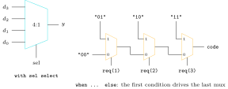

Definition
-- equation
y <= (a and b) or (not c);
-- conditional: priority, first true condition wins
code <= "11" when req(3) = '1' else
"10" when req(2) = '1' else
"01" when req(1) = '1' else
"00";
-- selected: one expression, exclusive choices
with sel select
y <= d0 when "00",
d1 when "01",
d2 when "10",
d3 when others;Every concurrent assignment is re-evaluated whenever a signal on its right-hand side changes, like a gate reacting to its inputs.
Conditional versus selected
when ... else builds a chain of 2-to-1 multiplexers: the first condition has priority, conditions may overlap — natural for a priority encoder. with ... select builds one wide multiplexer: choices must be distinct constants and cover every value (others for the rest, including U, X, … of std_logic). The choices are values, not conditions.
Picture

One balanced multiplexer for with–select; for when–else a chain of 2:1 multiplexers in which the first condition, req(3), controls the multiplexer nearest to the output, so it has priority and the shortest path.
Intuition
Equations are wires and gates; with–select is a switch with labelled positions; when–else is a list of rules read top-down.
Pitfall
A conditional assignment that reads its own target (q < d when en = '1' else q;=) describes memory: synthesis infers a latch, almost never wanted in combinational logic.